Lab 1.1 - Welcome To SNAP!¶
Snap!is a programming language, which you can use to tell a computer what to do. A program is a particular set of instructions for the computer to follow.
Programs in most languages use only letters (and punctuation), but Snap! is different: it’s a visual language. Instead of writing a program only using the keyboard, you will drag pictures of blocks and click them together.
The following is a program in SNAP!:
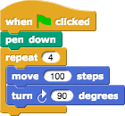
Can you guess what it might do? (Write your guess below)
Part 1 - Blocks¶
The area at the left edge of the window is the palette. As you see in the picture, it contains tabs for eight different-color block categories. In this lab, we will focus on the Motion, Sound, Pen, and Sensing tabs. You will learn about the other tabs in the next few labs.
These tabs are an important organizational structure in Snap! because they are home to the various blocks that you will use to tell the computer what to do. The blocks are categorized under each tab based on what kind of thing each block does.
Below, fill in the name of the category to which each block belongs.
Block
Category
Look at the Motion tab. Under this tab you will find a bunch of blocks that correspond to motion-like actions. For example, click on the Move block, drag it to the scripting area, and drop it anywhere in the scripting area.
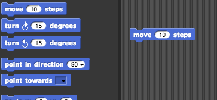
The block that you just dragged and dropped into the scripting area controls something that we call a sprite, which is the arrowhead-looking thing in the middle of the stage (the white part of the window).
Back to the scripting area, if you click on the Move Block you just put there, the sprite will move 10 steps. You can see this visually depicted by the sprite moving in the stage. You can vary the input of the block, i.e., the number 10, to change the number of steps you want to the sprite to move.
How can you change the block input so that the sprite moves in the opposite direction?
Part 2 - Scripts¶
Now that you have figured out how to make a sprite move, you might be wondering how to make the sprite do other things as well. To make a sprite do more than just move, we need to use different types of blocks and link them together. You can link blocks by Snapping (hence the name SNAP) them together – drag a block right underneath the one to which you want to attach it. Blocks will Snap! together when one block’s indentation is near the tab of the one above it. You should see a white bar appear like the one in the image below, which just shows you where the block will go after you drop it.
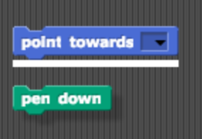
If you keep attaching blocks together in this way, you will create a script. A Snap! program consists of one or more of these scripts.
Try recreating the following script in the scripting area in SNAP.
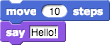
The purple say… blocks are available from the Looks tab.
Remember, a script will tell the sprite what to do. Click on the script and see what happens! You will know that your script is running if it has a highlighted border around it:
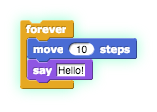
What happens when you run this script?
Be sure to note: blocks in a script run in a specific order, from the top of the script to the bottom. Generally, Snap! waits until one block has finished its job before continuing on to the block below it. (One common exception is blocks that play sounds: a block’s job can be to start the sound, which means the block below it will execute while the sound is still playing.
Part 3 - Reporters¶
At the bottom of Motion palette are three blocks shaped differently from the others. The oval-shaped x-position and y-position are called reporters. (We don’t need the third one right now.) Unlike the jigsaw-puzzle-piece-shaped command blocks we’ve used until now, reporters don’t carry out an action (such as moving the sprite or displaying a speech balloon) by themselves. Instead they report a value, usually for use in another block’s input slot.
These particular reporters tell you where the sprite is on the stage. As in algebra class, x means left-to-right position, and y means bottom-to-top position.
Drag your sprite to the far right side of the stage. Next, drag an x position block into the scripting area and click on it. You should see a little speech balloon next to the block:
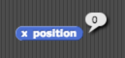
What value does the x position block report to you when the sprite is?
…at the far right side of the stage:
…in the center of the stage:
…at the far left side of the stage:
Click on the gray box to the left of the x-position block in the palette, and then look over to the stage. You will see that the value that the block would report is displayed on the stage:
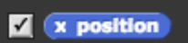
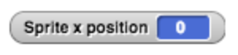
This on-stage display is called a watcher.
The x-position block and the y-position block will tell you the position of your sprite on the screen. Move the sprite around and the values reported by these blocks change.
Part 4 - Experiment with Drawing Commands¶
Try to get comfortable with the blocks under the Motion tab and the Pen tab. Figure out what each one does and try to use these blocks to draw a square or a simple picture.
What do these blocks do? (write an explanation next to each block)?
Does the turn block change the sprite’s x and/or y position?
Using these blocks, draw a square. Write the code (blocks) you used below.
Tips and Tricks:
Once the pen is down, it stays down even in a different script. Use the pen up block to lift the pen so that no lines will be drawn.
You also will want to show the direction and x and y position of the sprite. In the Motion tab, you can select for these to be shown on the stage as described in the reporters activity you saw earlier in the lab.
Part 5 - Follow that Mouse¶
What do you think the script above will do?
Hint: mouse x and mouse y are reporters in the Sensing palette; they tell you where the mouse is pointing.
Copy the code into SNAP, and click on the
foreverblock to run it.
Did it follow your expectations (Yes/No)?¶
What happens when you drag the mouse to a different part of the screen while the program is running?
How does program’s behavior change when you modify the
go toblock as shown below?
Part 6 - Forever and a Day¶
From the previous exercise, you may have figured out what the Forever block does. The forever block is the first block you have seen that holds, or wraps around, other blocks. We call this a C block because of its shape. As the name forever implies, it will run the blocks inside it again and again and again and … well, forever. You will find this block under the Control tab.
Will a forever block ever stop?
Not unless you tell it to: Click on the stop sign icon on the upper right hand corner of the Snap! window.
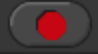
This stop sign will stop all scripts that are running in any sprite. This is equivalent to executing the stop all in the Control palette.
Check for Understanding¶
How many times will the sprite say “Hello”?
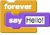
a) 1
b) 2
c) 10
d) continuouslyAssuming the sprite starts in the middle of the stage and pointing in direction 90, where would it end up after running this script?
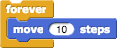
a) Farther right on the stage
b) Farther left on the stage
c) Off the stage to the right
d) Off the stage to the leftWhat would appear on the screen when this script is run?
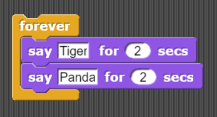
a) The sprite would say “Tiger” forever
b) The sprite would say “Tiger” then “Panda” once
c) The sprite would alternate between saying “Tiger” and “Panda” forever.
d) The sprite would say “Tiger” and “Panda” at the same time forever.Assuming the sprite started in the middle of the stage facing right, what kind of drawing would the sprite make?
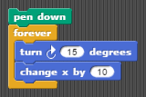
a) a circle
b) a
c) a cylinder
d) a straight line
Part 7 - Make a Kaleidoscope¶
Explore this drawing program for a little bit (https://aka.ms/kaleidodraw2). Press the spacebar to run the program, and move your mouse cursor over the stage of the Snap! window. While over the stage, use the d (pen down), u (pen up), and c (clear) keyboard keys to change what gets drawn on the screen. The script that causes the sprite to follow the pointer is
As you can see, this drawing program features more Control blocks, in addition to the forever block first introduced in the Follow the Mouse activity. These hat-shaped block, which can be used only at the beginning of a script, indicate when a specific script should be run.
Part 8 - Kaleidoscope Activity¶

The kaleidoscope consists of 4 sprites. Each sprite will be drawing with a different pen color. Each sprite’s movement is based on the movement of the mouse. The first sprite follows the mouse, just like in the example we looked at before. The other 3 sprites move around as the mouse moves, but reflected over the X and Y axes.
Don’t forget to save and submit your work!
Some tips:
You will need four sprites. (We haven’t used more than one sprite up to now, but having more than one allows for more interesting projects, as you’ll see.) The easiest way to create three more is to duplicate the one you have. Right-click the sprite in the sprite corral, and select duplicate from the context menu that appears. Each duplicated sprite will have exactly the same scripts as the original, which is why we suggest duplication rather than just creating more sprites from scratch.
You can change the color of each sprite by clicking the color input in that sprite’s
set pen colorblock (found under the Pen tab), choosing a color, and then clicking on the block itself (to run the block and actually set the color). Don’t worry about matching the colors in the animation exactly!Pay close attention to what each of the other sprites is doing in the animation above. You will need to modify the x and y inputs in each sprite’s
go to x-yblock using simple formulas, withadditionandsubtraction.Hint: All the sprites are reflecting in different ways around the (x=0, y=0) origin point of the stage.**
Once you figured this out, try out some complicated formulas and/or more sprites, and share with your classmates
Grading Scheme/Rubric¶
Lab 1.1 Criteria |
Points |
|---|---|
1.1 What does it do? |
2 points |
1.2 Categories |
4 points |
2.1 Move in opposite direction |
1 points |
2.2 What happens |
2 points |
3.1 x positions |
3 points |
5.1 What it does |
3 points |
5.2 Does turn block change x or y position |
1 points |
5.3 Draw a square |
4 points |
6.1 What does it do |
2 points |
6.2 Dragging the mouse |
1 points |
6.3 Program behavior w/modification |
1 points |
Total |
28 points |
Checking for Understanding |
|
7 Multiple choice |
4 points |
Total |
4 points |
Mini-project |
|
8 Make a Kaleidoscope |
10 points |
Total |
10 points |
PROJECT TOTAL |
42 points |